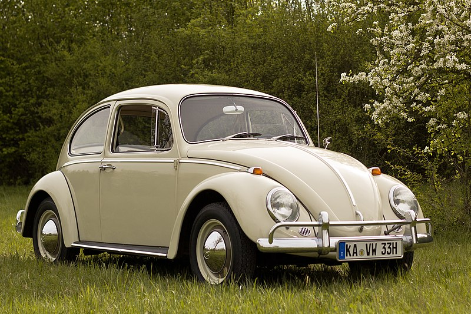
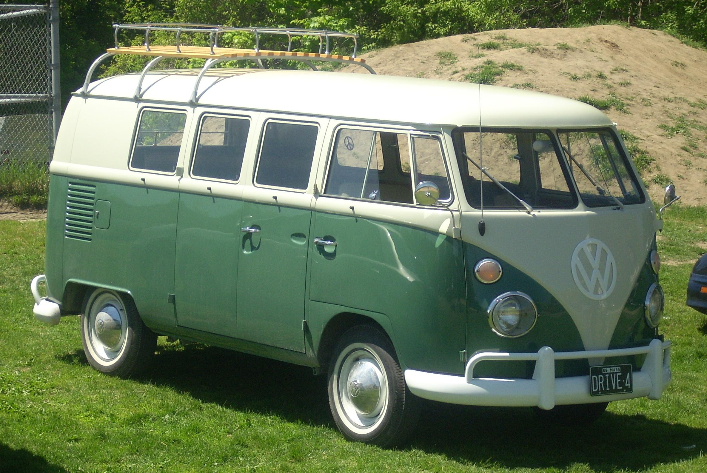
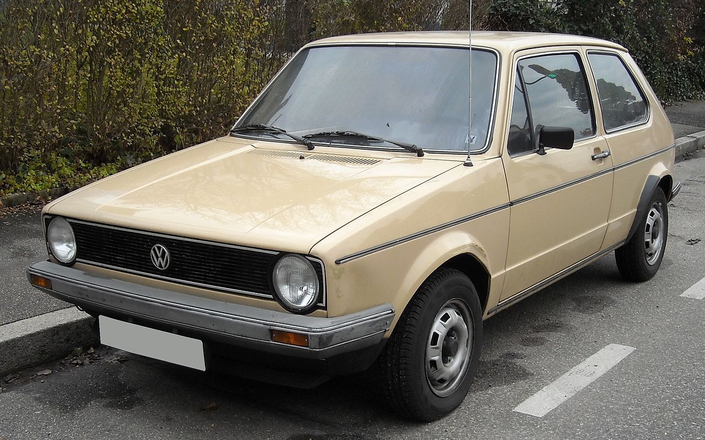
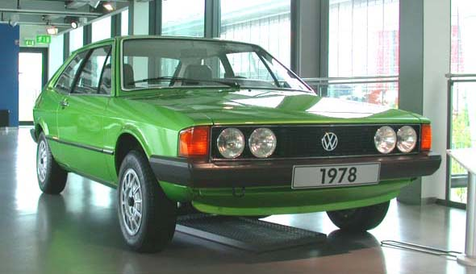
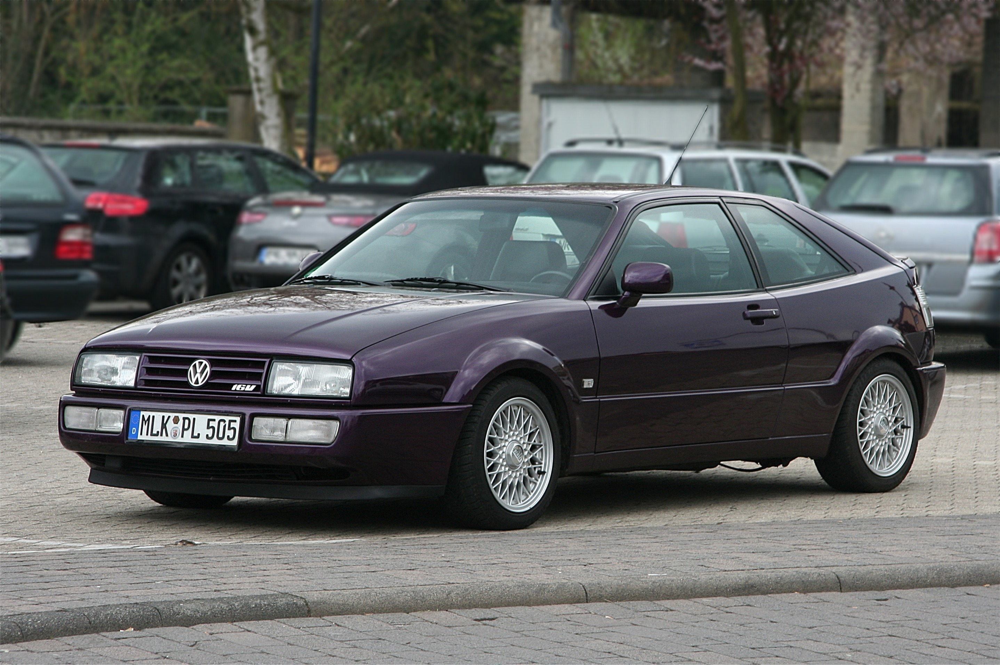

Modell: Volkswagen Käfer
Baujahr: 1938-2003
Produktionsstückzahl: 21,000,000+
Motor: 4-Zylinder, 1.2L
Leistung: 34 PS
Höchstgeschwindigkeit: 130 km/h

Modell: Volkswagen Bus T1
Baujahr: 1950-1967
Produktionsstückzahl: 1,8 Millionen
Motor: 4-Zylinder, 1.2L
Leistung: 30 PS
Höchstgeschwindigkeit: 80 km/h

Modell: Volkswagen Golf I
Baujahr: 1974-1983
Produktionsstückzahl: 6 Millionen+
Motor: 4-Zylinder, 1.1L
Leistung: 50 PS
Höchstgeschwindigkeit: 140 km/h

Modell: Volkswagen Scirocco
Baujahr: 1974-1992
Produktionsstückzahl: 800,000+
Motor: 4-Zylinder, 1.6L
Leistung: 110 PS
Höchstgeschwindigkeit: 180 km/h

Modell: Volkswagen Corrado
Baujahr: 1988-1995
Produktionsstückzahl: 97,000+
Motor: 4-Zylinder, 1.8L
Leistung: 136 PS
Höchstgeschwindigkeit: 210 km/h